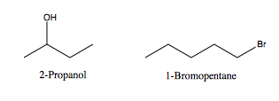
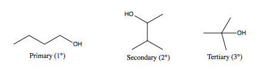
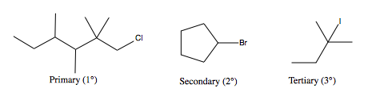
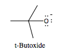
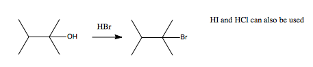
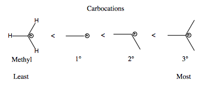

Chapter 4 - Alcohols
-
Alcohols: An Overview
• Below we can see two molecules: one with an alcohol group (left) and the other an alkyl bromide group (right).

• The alcohol on 2-propanol is characterized a secondary alcohol because the carbon bonded to the alcohol is also bonded to two other carbons.
• The 1-Bromopentane compounds on the right is described as a primary bromide because the carbon bonded to bromine is bonded to one other carbon.
• Alcohols can have up to three degrees of substitutions.

• Alkyl halides also have the same degree of substitution pattern because they are derived from alcohols.

• Alcohols are acidic. We can remove the acidic proton to make a good base.
 -
Alcohols to Alkyl Halides: SN1 Reactions
Reaction Overview

• To make alkyl halides we react alcohols with a halide acid (HI, HBr, or HCl). This is called a unimolecular nucleophilic substitution (SN1) reaction.
• This SN1 reaction generates an alkyl halide that serves as good leaving group for subsequent reactions.
Rectivity
• Alcohol Substitution: (fastest) 3° > 2° > 1° alcohols (slowest)
• Use of Acid: (fastest) HI > HBr > HCl >> HF (slowest); HF is not used because of its high electronegativity which means the electrons are not donated during the reaction.
• Leaving group displacement: (best) R-I > R-Br > R-Cl >>> R-F (worst)
• Alkyl iodides are the better leaving group here.
Mechanism of Action

• The transition state is controlled by the carbocation in step two. This is the rate determining step of the reaction or the slow step. The rate law for the slow step is modeled by: rate = k[R-LG]
• By this equation we can see how the reaction is unimolecular by nature. The rate is affected by the amount of R-LG reactant.
Carbocation Stability

• The stability of the reaction relies on the cabocation transition state.
• The reason why this is called a unimolecular substitution reaction is because only one species is involved in the formation of the product once we’ve reached the transition state: the carbocaton.
• A more stable carbocation results in a faster reaction.
• Carbocations can also undergo rearrangements in order to form a more stable carbocation as detailed below.

• Once we reach the transition state, the molecule can undergo a hydride migration to achieve as more stable carbocation. Methyl groups can also undergo these 1,2 shifts. -
Alcohols to Alkyl Halides: SN2 Reactions
Reaction Overview
 • The conversion of alcohols to alkyl halides via
primary alcohols is called s Sn2 reaction.
• The conversion of alcohols to alkyl halides via
primary alcohols is called s Sn2 reaction.
• This is a bimolecular nucleophilic substitution reaction.
• This reaction results in the inversion of stereochemistry.
Reactivity
• Alcohol Degree of substitution: (slowest) 3° < 2° < 1° alcohols (fastest); This is the opposite of SN1 reactions. • Acid: (fastest) HI > HBr > HCl >> HF (slowest); HF is not used because of its high electronegativity which means the electrons are not donated.
• Leaving group displacements: (best) R-I > R-Br > R-Cl >>> R-F (worst); Alkyl iodides are the better leaving groups here.
Mechanism of Action
 • Step two of the SN2 reaction is the rate
determining step. This is a concerted step. A bromide ion attacks
the carbon and simultaneously displaces the water leaving
group.
• Step two of the SN2 reaction is the rate
determining step. This is a concerted step. A bromide ion attacks
the carbon and simultaneously displaces the water leaving
group.
• Since two species are involved in the rate-determining step this reaction is bimolecular.
• This stereochemistry is inverted because the nucleophilic bromide attacks the carbon from the side opposite of the water leaving group.
• The rate law can be modeled by: rate = k[Br-][R-OH] -
Free Radical Reactions: Halogenation
Reaction Overview

• This reaction is used to halogenate compounds.
Reactivity
• Br2 and Cl2 can both be used but Br2 is more selective for the most stable carbocation.
• Degree of Carbon Substitution: (fastest) 3° > 2° > 1° carbon (slowest)Mechanism of Action

• This reaction proceeds via a radical chain reaction.
• Step 1 is called the initiation step.
• Step 2 and 3 are called propagations steps.
• Eventually the reaction ends with a termination step. In this step the free radicals come together and the reaction ends with the desired product and no reactions.
Stability

• This tread is similar to carbocation stability trends. -
Alkyl Halides From Thiosulfonyl and PBr3
Reaction Overview

• These are other alternatives you might encounter that transform primary alcohols to alkyl halides.Mechanism of Action
• This reactions follows an SN2 pathway.